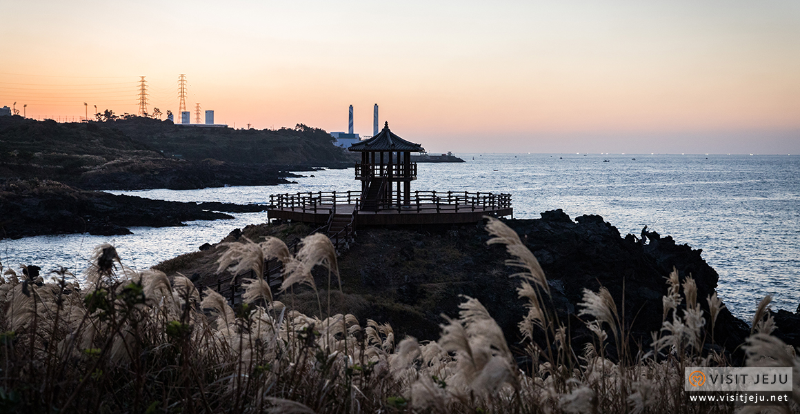
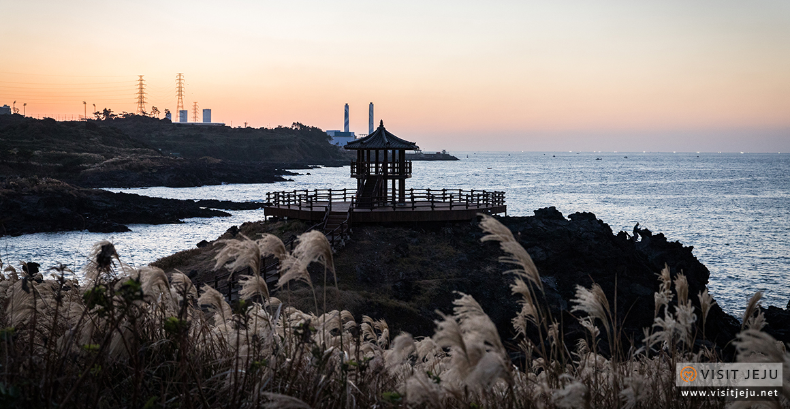

닭머르해안길
#제주도 #닭머르해안길 #해변 #산책

insta

map
닭머르 바위는 마치 닭이 흙을 파헤치고 그 안에 들어앉은 모습을 닮았다하여 이름이 붙여졌다.
아름다운 바다 전망을 자랑하는 이곳은 도민들은 이미 잘 알고 있는 곳이지만, 아직 여행객들에게는 잘 알려지지 않았다.
그렇기에 한적하게 산책을 즐기며 사진을 찍기에 제격인 장소이다.
닭머르 바위가 있는 곳은 나무갑판으로 길이 만들어져 있고, 그 길의 끝엔 해안정자가 자리 잡고 있다.
해안정자까지 이르는 길은 가을을 맞아 풍성해진 억새가 사진 찍기에 더없이 좋은 배경을 만들어준다.
특히 이곳은 일몰 장소로도 손꼽히는 곳이기에 해가 지기 바로 직전에 사진을 담는 것을 추천한다.
억새와 저물어가는 가을 해가 아름다운 배경과 조명을 만들어 줄 것이다.
제주특별자치도 제주시 조천읍 신촌북3길 62-1